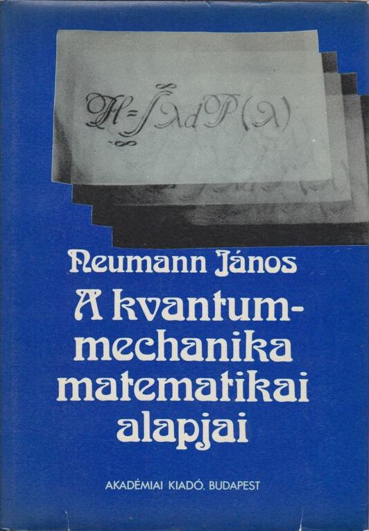
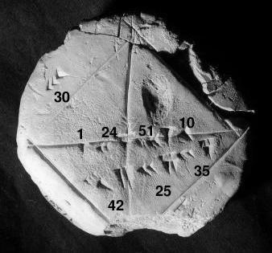

Munkássága
Kvantummechanika
A matematikusok 1900-as nemzetközi kongresszusán (International Congress of Mathematicians) állt elő a huszonhárom problémából álló híres listájával David Hilbert. Ezek komoly hatással voltak a 20. század matematikájának fejlődésére. Ezek közül a hatodik a fizikai elméletek axiomatizálásáról szólt. Az évszázad új fizikai elméletei közül csak ezek egyike került axiomatizálásra az 1930-as évek végére: a kvantummechanika. A kvantummechanika - a halmazelmélethez hasonlóan - a kezdeti krízis állapotában volt; filozófiai és technikai jellegű problémákkal nézett szembe. Egyrészt a nyilvánvaló nem determinisztikus jellege nem szűnt meg, ahogy Albert Einstein hitte, hogy meg kell történnie ahhoz, hogy kielégítő és teljes legyen. Másrészt két független, de ekvivalens heurisztikus megfogalmazása volt, a Werner Heisenberg által bevezetett mátrixmechanikai és az Erwin Schrödinger által kifejlesztett hullámmechanikai kép, de nem volt egy kielégítő egyesített megfogalmazása.
Miután teljessé tette a halmazelmélet axiómarendszerét, Neumann nekiállt a kvantummechanika axiomatizálásához. Rögtön látta - 1926-ban - hogy a kvantumrendszer állapotát egy úgynevezett Hilbert-tér egy pontjának kell tekinteni, hasonlóan a klasszikus mechanika 6N dimenziójához (N a részecskék száma, 3 általános koordináta és 3 kanonikus impulzus minden részecske esetén), de a 6N helyett végtelen dimenzióval, mivel a rendszernek végtelen sok lehetséges állapota van: a klasszikus fizikai mennyiségeket (például hely és lendület) emiatt ezen a téren ható lineáris operátorokként kell kezelni. A kvantummechanika fizikája ezáltal a Hilbert-tér lineáris Hermitikus operátorainak matematikájára egyszerűsödik. Például Heisenberg híres határozatlansági elve - mely szerint a részecske helye és lendülete nem határozható meg tetszőleges pontossággal - a két megfelelő operátor nem-kommutativitásává alakul. Ez az új matematikai megfogalmazás - amely a mátrixmechanikát és a hullámmechanikát is magában foglalja - 1932-ben A kvantummechanika matematikai alapjai (The Mathematical Foundations of Quantum Mechanics) című alapvető könyvhöz vezetett. Jóllehet a fizikusok általában másfajta megközelítést fogadtak el, Neumanné inkább a matematikusok számára volt elegáns és kielégítő. A fizikusok által elfogadott megközelítést 1930-ban Paul Dirac fogalmazta meg. Ez egy különös függvényen - az úgynevezett Dirac-delta függvényen - alapult, amelyet Neumann keményen bírált.
Mindenesetre Neumann absztrakt kezelési módja lehetővé tette a számára, hogy szembeállítsa a determinizmus és a nem-determinista álláspont ügyét, és a könyvében megmutatta, hogy a kvantummechanika nem származtatható egy a klasszikus mechanikához hasonló determinisztikus elmélet statisztikai megközelítéséből. A bizonyítás ugyan tartalmazott egy fogalmi hibát, mégis egy sor kutatásra ösztönzött, amely John Stewart Bell 1964-es Bell-elmélettel kapcsolatos munkáján és Alain Aspect kísérletein keresztül megmutatta, hogy a kvantummechanika gyökeresen eltérő valóságképet igényel, mint a klasszikus fizika.
Egy 1936-os kiegészítő művében Neumann Garrett Birkhoffal együtt bebizonyította, hogy a kvantummechanika egy teljesen más logikát is követel, mint a klasszikus. Például a fény (a fotonok) nem képesek áthaladni két egymást követő, egymásra merőlegesen polarizált polárszűrőn, és emiatt egy harmadik szűrőn sem tud átmenni, amely az eredetiekhez képest ferdén polarizált, akár a másik kettő elé, akár mögé helyezzük. De ha a harmadik szűrőt a másik kettő közé helyezzük, a foton képes keresztülhaladni.
A számítógép tervezése
“A munka oroszlánrészét akkor kell majd elvégezni, ha a gép már elkészült, és használható lesz. Ekkor magát a gépet kell majd kísérleti eszközként fölhasználni.”
Az elektronikus számítógépek logikai tervezésében kiemelkedő érdemeket szerzett. Ennek alapvető gondolatait - a kettes számrendszer alkalmazása, memória, programtárolás, utasítás rendszer - Neumann-elvekként emlegetjük. Tanácsadóként szerepelt az EDVAC - az első olyan számítógép, amely a memóriában tárolja a programot is - tervezésénél 1944-től, amelyet 1952-ben helyeztek üzembe. Ennek a számítógépnek a tervezése során fejlesztette ki az elektronikus számítógépek belső szervezésének elméletét (Neumann-elv), amelynek alapján készülnek a mai számítógépek is. Együtt dolgozott sok más amerikai magyar emigráns tudóssal is e téren, akik szintén szerepet vállaltak a számítástechnika fejlődésében. Ezek közé sorolható Kemény János (1926-1992), aki a Dartmouth Egyetem rektoraként kötelezővé tette a számítógépek (terminálok) használatát a bölcsész és jogi karon is, és e célból megalkotta az elvont gépi programozás helyett a BASIC nyelvet. Szintén Kemény János nevéhez fűződik az osztott idejű számítógép hálózat is, melyet az IBM első Robinson-díja ismert el. Szilárd Leóval is kollaborált, ő vezette be az információ elemi kvantumát (igen/nem), amit ma a bit néven ismerünk, illetve nem hagyható ki e listáról a Time hetilap által 1997-ben az év emberének nevezett Andrew Grove (Gróf András), aki pedig az Intel vezéreként évente megtöbbszörözte a mikroprocesszorok sebességét.
Neumann-elvek
- Teljesen elektronikus működés (ez Neumann idejében elektroncsöves felépítést jelentett, amit később a tranzisztoros, majd az integrált áramkörös felépítés követett)
- Kettes számrendszer használata (az összes művelet, pl. összeadás, szorzás, kettes számrendszerbeli logikai műveletekre redukálható)
- Belső memória használata
- Tárolt program elve. A számításokhoz szükséges adatokat és programutasításokat a gép azonos módon, egyaránt a belső memóriában (operatív tár) tárolja.
- Soros utasítás-végrehajtás (az utasítások végrehajtása időben egymás után történjen; ennek egy alternatívája a párhuzamos utasítás-végrehajtás, amikor több utasítás egyidejűleg is végrehajtható: ezt a lehetőséget Neumann elvetette)
- Univerzális felhasználhatóság, Turing-gép (programozhatóság; a különböző feladatok programokkal legyenek megoldva, nem pedig erre a célra épített hardverrel)
- Szerkezet: öt funkcionális egység (aritmetikai egység, központi vezérlőegység, memóriák, bemeneti és kimeneti egységek)
A Neumann-elvű számítógépek elméleti felépítése (a Neumann-architektúra)
Egy Neumann-architektúrájú számítógép a következő egységekből épül fel:
-
központi egység
-
központi feldolgozó egység
- központi vezérlő egység
- aritmetikai-logikai egység
- regiszterblokk
- gyorsítómemória
- matematikai társprocesszor
- operatív tár (memória)
-
központi feldolgozó egység
- háttértárak
-
perifériák
- input perifériák
- output perifériák
A központi vezérlőegységeket (CPU: Central processing unit), azaz a processzorokat működésük szempontjából két külön kategóriába sorolhatjuk. Az egyik a Neumann-architektúra a másik Harvard-architektúra szerint működik. A két architektúra abban különbözik, hogy a Neumann-elvű esetében megegyezik az adat- és a programmemória, míg a Harvard-architektúrájú számítógép esetén a program- és adatmemória különbözik.
Numerikus analízis
A numerikus analízis kezdete az ókori egyiptomi kultúráig nyúlik vissza; egyik első ilyen témájú írott emlék a Rhind papirusz (i. e. 1650 körül). Komolyabb fejlődésnek azonban csak Isaac Newton és Gottfried Leibniz munkásságának köszönhetően indult. A 18. és 19. században nem kisebb elmék, mint Leonhard Euler, Joseph Louis Lagrange és Carl Friedrich Gauss fejlesztették tovább a numerikus analízist. Ezen eredményekre építve a 20. század elejére kialakultak a kis lineáris egyenletrendszerek megoldására, kis mátrixok invertálására, a közönséges differenciálegyenletek megoldására és az integrálok közelítésére használható gyakorlati módszerek.
Neumann János felismerte, hogy kihasználva a számítógépek képességét hosszú számítási sorok emberi beavatkozás nélküli elvégzésére, kiterjesztheti a numerikus módszerek hatókörét az összetettebb lineáris egyenletrendszerekre és a parciális differenciálegyenletekre is. Neumann arra is rájött, hogy a fejlettebb módszerek alkalmazásának kulcsa a számítógépek memóriakapacitásának növelése. Az 1930-as évek végén létező számítógépek nagy előnye a számológépekkel szemben igazán jelentősen a szorzások műveleti sebességében mutatkozott meg, míg tárolókapacitás terén egyértelműen a lyukkártyás számológépek vezettek. A numerikus módszerek azonban nagy mennyiségben állítanak elő közbenső eredményeket, amelyeket egy gyorsan hozzáférhető központi memóriában tárolva komoly teljesítménynövekedést produkálhatunk.
Az eszközök fejlesztésén túl a módszereket is át kellett alakítani, mert a hagyományos eliminációs eljárások numerikusan nem voltak eléggé stabilak, azaz érzékenyek voltak a kerekítési hibák halmozódására. Az eliminációs eljárások helyét szukcesszív approximációs (sorozatosan közelítő) eljárások vették át, melyek ugyan több szorzást igényeltek, de természetüknél fogva stabilabbak voltak.
Közgazdaságtan
A 30-as években Wald Ábrahám matematikussal együtt foglalkoztak egyensúlyi feltételekkel dinamikus és statikus modellekben. Kettőjük munkája eredményeképpen jelentősen javult a közgazdaságtani elemzés technikai színvonala, feltárták több korábbi közgazdász teoretikus és politikai elemzésének hiányosságait. Munkásságukat később olyan neves közgazdászok is felhasználták, mint Kenneth Arrow és Gerard Debreu, akik kiegészítették, és Walras általános egyensúlyi modellére alkalmazták. 1937-ben egy bécsi konferencián Wald előadta a statikus általános egyensúly létezésének bizonyítását, Neumann pedig (általánosítva az 1928-as játékelméleti cikkét) egy dinamikus modellben igazolta az egyensúlyi növekedési pálya létezését, s ez a dualitással együtt a széleskörben használt lineáris programozás előfutára lett.
English:
Quantum mechanics
David Hilbert came up with his famous list of twenty-three problems at the 1900 International Congress of Mathematicians. These had a major impact on the development of mathematics in the 20th century. The sixth of these was about the axiomatization of physical theories. Among the new physical theories of the century, only one of them was axiomatized by the end of the 1930s: quantum mechanics. Quantum mechanics - like set theory - was in a state of initial crisis; he faced philosophical and technical problems. On the one hand, the non-deterministic nature of the obvious has not been eliminated, as Albert Einstein believed it should be in order to be satisfactory and complete. On the other hand, he had two independent but equivalent heuristic formulations, the matrix mechanics picture introduced by Werner Heisenberg and the wave mechanics picture developed by Erwin Schrödinger, but no satisfactory unified formulation.
After completing the axiom system of set theory, Neumann started to axiomatize quantum mechanics. He immediately saw - in 1926 - that the state of the quantum system should be considered as a point of a so-called Hilbert space, similar to the 6N dimensions of classical mechanics (N is the number of particles, 3 general coordinates and 3 canonical impulses for each particle), but instead of 6N, it is infinite dimension, since the system has an infinite number of possible states: classical physical quantities (such as position and momentum) must therefore be treated as linear operators acting on this space. The physics of quantum mechanics is thus simplified to the mathematics of the linear Hermitian operators of the Hilbert space. For example, Heisenberg's famous uncertainty principle - according to which the position and momentum of a particle cannot be determined with arbitrary precision - turns into the non-commutativity of the two corresponding operators. This new mathematical formulation - which includes both matrix mechanics and wave mechanics - led to the seminal book The Mathematical Foundations of Quantum Mechanics in 1932. Although physicists generally adopted a different approach, Neumann's was more elegant and satisfying to mathematicians. The approach accepted by physicists was formulated in 1930 by Paul Dirac. It was based on a peculiar function - the so-called Dirac delta function - which Neumann harshly criticized.
In any case, Neumann's abstract treatment allowed him to contrast the case of determinism with non-determinism, and in his book he showed that quantum mechanics cannot be derived from a statistical approach to a deterministic theory similar to classical mechanics. Although the proof contained a conceptual error, it nevertheless stimulated a series of researches which, through John Stewart Bell's work on the Bell theory in 1964 and Alain Aspect's experiments, showed that quantum mechanics required a radically different picture of reality than classical physics.
In a supplementary work from 1936, Neumann together with Garrett Birkhoff proved that quantum mechanics requires a completely different logic than the classical one. For example, light (photons) cannot pass through two consecutive polarizing filters polarized at right angles to each other, and therefore cannot pass through a third filter polarized obliquely to the originals, whether placed in front of or behind the other two. But if the third filter is placed between the other two, the photon is able to pass through.
Computer Sience
He achieved outstanding merits in the logical design of electronic computers. The basic ideas of this - the use of the binary number system, memory, program storage, instruction system - are referred to as Neumann principles. From 1944, he was involved in the design of the EDVAC - the first computer that also stores the program in memory - as a consultant, which was put into operation in 1952. During the design of this computer, he developed the theory of the internal organization of electronic computers (Neumann principle), on the basis of which today's computers are also made. He worked together with many other American Hungarian émigré scientists in this field, who also played a role in the development of computer technology. Among them is János Kemény (1926-1992), who, as rector of Dartmouth University, made the use of computers (terminals) mandatory in the faculties of humanities and law, and for this purpose he created the BASIC language instead of abstract computer programming. János Kemény is also credited with the time-sharing computer network, which was recognized by IBM's first Robinson Award. He also collaborated with Leo Szilárd, who introduced the elementary quantum of information (yes/no), which we know today as the bit, and Andrew Grove (Count András), who was named man of the year by Time magazine in 1997, cannot be left out of this list, who and as the leader of Intel, he multiplied the speed of microprocessors every year.
Neumann Principles
- Fully electronic operation (in Neumann's time, this meant electron tube construction, which was later followed by transistor and then integrated circuit construction)
- Use of the binary number system (all operations, e.g. addition, multiplication, can be reduced to logical operations in the binary number system)
- Use of internal memory
- Stored program principle. The machine stores the data and program instructions required for calculations in the same way, both in the internal memory (operational memory).
- Serial instruction execution (instructions should be executed one after the other in time; an alternative to this is parallel instruction execution, when several instructions can be executed simultaneously: this option was rejected by Neumann)
- Universal usability, Turing machine (programmability; different tasks should be solved with programs, not with purpose-built hardware)
- Structure: five functional units (arithmetic unit, central control unit, memories, input and output units)
Numerical analysis
The beginning of numerical analysis dates back to ancient Egyptian culture; one of the first written records on this topic is the Rhind Papyrus (circa 1650 BC). However, it only began to develop more seriously thanks to the work of Isaac Newton and Gottfried Leibniz. In the 18th and 19th centuries, no lesser minds than Leonhard Euler, Joseph Louis Lagrange and Carl Friedrich Gauss further developed numerical analysis. Based on these results, practical methods for solving small linear equation systems, inverting small matrices, solving ordinary differential equations and approximating integrals were developed by the beginning of the 20th century.
János Neumann realized that by taking advantage of the ability of computers to perform long series of calculations without human intervention, he could extend the scope of numerical methods to more complex systems of linear equations and partial differential equations. Neumann also realized that the key to using more advanced methods was to increase the memory capacity of computers. The big advantage of computers that existed at the end of the 1930s compared to calculators was really shown in the operation speed of multiplications, while the punch card calculators were clearly the leaders in terms of storage capacity. Numerical methods, however, produce a large amount of intermediate results, which can be stored in a quickly accessible central memory to produce a serious increase in performance.
In addition to the development of the tools, the methods also had to be modified, because the traditional elimination procedures were not numerically stable enough, i.e. they were sensitive to the accumulation of rounding errors. The elimination procedures were replaced by successive approximation (serially approximating) procedures, which required more multiplications, but were inherently more stable.
Economics
In the 1930s, together with the mathematician Ábrahám Wald, they dealt with equilibrium conditions in dynamic and static models. As a result of the work of the two of them, the technical level of economic analysis improved significantly, and the shortcomings of the theoretical and political analysis of several previous economists were revealed. Their work was later used by renowned economists such as Kenneth Arrow and Gerard Debreu, who supplemented it and applied it to Walras' general equilibrium model. In 1937, at a conference in Vienna, Wald presented the proof of the existence of a static general equilibrium, and Neumann (generalizing his 1928 game theory article) proved the existence of an equilibrium growth path in a dynamic model, and this, together with duality, became the forerunner of widely used linear programming.